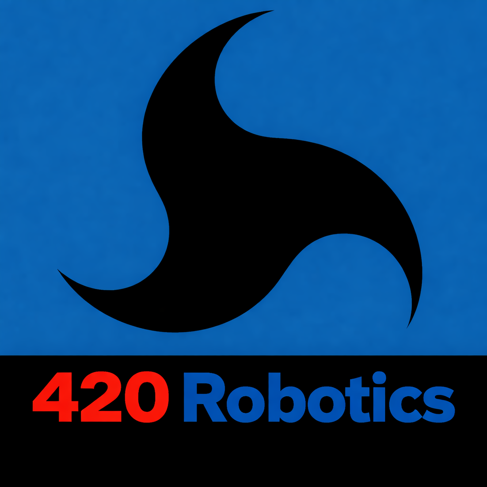
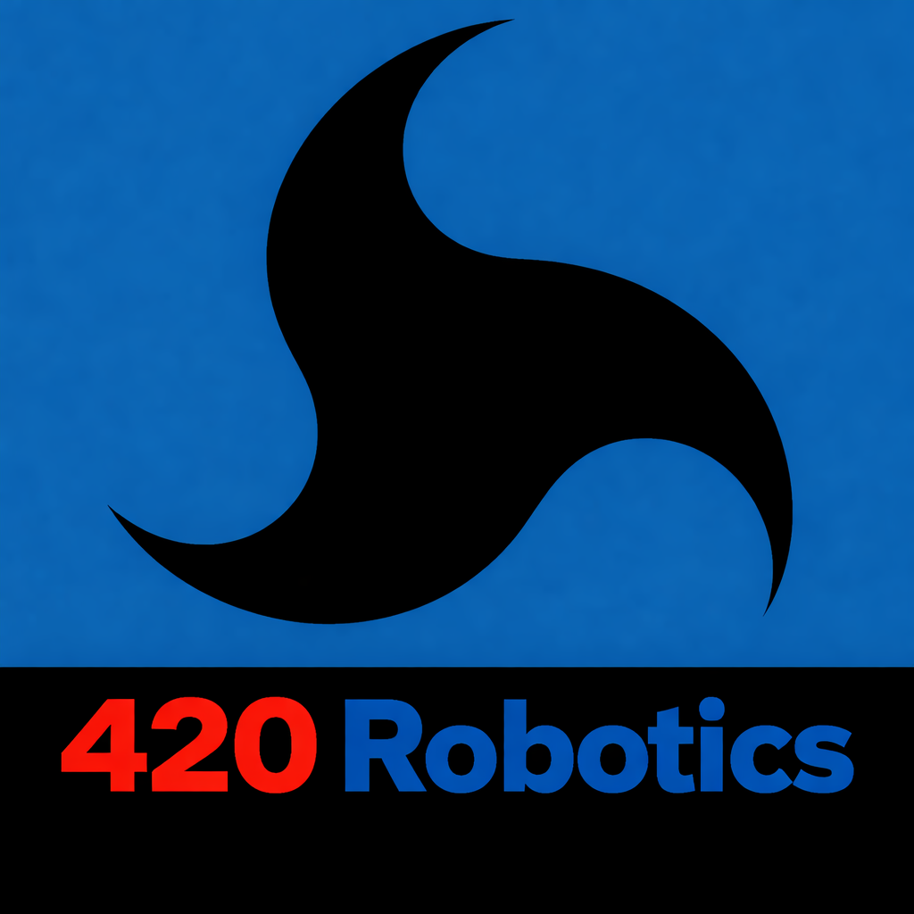

Advancing rigorous, independent AI safety research — measuring what models actually do under pressure, not just what they claim to do.
The 420 Robotics operates as a fully independent research initiative. We receive no funding from AI corporations, government contracts, or commercial interests — by design. Our independence is our integrity.
Every dollar contributed directly supports the testing infrastructure, computing resources, publication efforts, and community tools that make this research possible. We are building something that does not yet exist: a transparent, reproducible, public record of how AI systems behave when it matters most.
Your support — at any level — keeps this work free from conflicts of interest and open to the public. We believe AI safety is too important to be left exclusively to the companies building the systems being evaluated.
This research requires sustained investment in infrastructure, testing cycles, academic partnerships, and publication. We are a lean, mission-driven team committed to doing this work at the highest possible standard.
Your contribution funds real, measurable outcomes — from publishing peer-reviewed papers to building open-access dashboards that let the public see how AI models actually score.
.png)
Scan to donate via
Cash App · $420robotics For God. For Country. For Humanity.The MLT Framework is a living methodology. Below is a transparent view of every major initiative planned for 2026 — organized by category, with clear timelines and goals. This is the work your contributions directly enable.
Current Reliability Score formulas have proven their value in early testing, but the data we have gathered over the past months reveals areas where precision can be substantially improved. Spring 2026 brings a full overhaul — new weighted formulas, expanded edge-case calibration, and cross-model normalization so scores can be meaningfully compared across different model generations.
Spring 2026The current scoring system measures response accuracy and latency. Summer 2026 introduces three new dimensions: emotional awareness (does the model recognize the human stakes of a scenario?), actionability (does the response actually help?), and confidence calibration (does the model express appropriate certainty given what it knows?). These additions dramatically increase the real-world predictive value of MLT scores.
Summer 2026AI safety research cannot scale without the public. This fall, we launch an open platform where anyone can run standardized MLT scenarios against any available AI model and submit results to our central database. Submissions will be validated, normalized, and published with full attribution. This transforms MLT from a boutique methodology into a global, living dataset.
Fall 2026We are actively reaching out to AI safety and ethics departments at major research universities. March 2026 marks our first formal outreach campaign, targeting institutions with existing AI safety programs. Partnership goals include co-authored publications, shared infrastructure, and mutual validation of MLT methodology by independent academic teams.
March 2026One of the most critical questions in practical AI safety: can a model maintain its ethical commitments when a user frames a harmful request as fiction, roleplay, or cultural practice? June 2026 launches a structured jailbreak resistance battery — testing whether reflexive safety (genuine internalized values) holds under the full range of adversarial framing techniques documented in the wild.
June 2026Standard MLT scenarios cover the middle of the ethical landscape. July 2026 pushes to the extremes: maximum ambiguity, maximum emotional pressure, simultaneous conflicting obligations, and scenarios where every possible response carries genuine ethical costs. These extreme cases reveal the actual architecture of a model's moral reasoning in ways standard tests cannot.
July 2026This summer, we launch a live, publicly accessible dashboard showing real-time model rankings, scenario results, score distributions, and trend data over time. Built for both the general public and technical researchers, it will become the authoritative public record of how major AI models perform on the MLT — updated continuously as new tests are completed.
Summer 2026Abstract methodology becomes real when people can watch it in action. Beginning this spring, we launch a YouTube series documenting actual MLT testing sessions — real prompts, real model responses, real-time analysis. The series is designed to be accessible to a general audience while remaining technically rigorous enough to be useful to researchers and policymakers.
Spring – Summer 2026Three major peer-reviewed papers are in preparation for Summer 2026 submission: the first formally defining the MLT methodology and presenting initial results; the second examining the reflexive vs. calculated safety dichotomy and its real-world implications; and the third analyzing the corporate safety paradox — the structural conflict between commercial incentives and genuine AI safety commitments.
Summer 2026Good research has no value if it doesn't reach decision-makers. Q2 2026 brings a series of policy-focused white papers written specifically for government and regulatory audiences — covering recommended AI procurement standards, bias detection guidelines for public-sector use cases, and a proposed national framework for mandatory safety testing of AI systems deployed in high-stakes environments.
Q2 2026Progress is only visible when you can measure where you started. We are retroactively testing legacy AI models — GPT-3, early Bard iterations, original Claude releases, and others — using the current MLT battery to establish a historical baseline. This ongoing project will reveal whether AI moral reasoning has genuinely improved over time, or simply become more sophisticated at appearing to improve.
OngoingAccountability requires consequences — or at least visibility. We are establishing two permanent public records: a Hall of Fame recognizing AI models that achieve perfect or near-perfect MLT scores across all dimensions and all scenario categories, and a Wall of Shame documenting models that have produced catastrophic failures — responses that caused measurable real-world harm or demonstrated fundamental safety breakdowns. Both lists will be permanent, public, and updated as new results emerge.
OngoingBefore a single dollar of community funding is raised, this is what the 420 Robotics has already demonstrated through rigorous, independent research:
Measurable Moral LatencyAI systems exhibit quantifiable moral latency — a measurable delay or degradation in ethical response quality that can be tracked, scored, and compared.
Latency Predicts FailuresModels with higher measured moral latency in controlled testing have a statistically significant correlation with documented real-world safety failures.
Reflexive Outperforms CalculatedModels demonstrating genuine internalized values (reflexive safety) consistently outperform models relying on calculated, rule-based safety responses under adversarial conditions.
Bias Is Systematically DetectableUsing structured MLT scenarios, we have demonstrated that AI bias — across multiple dimensions — can be detected, classified, and measured with reproducible methodology.
The Moral Latency Test Framework is not a product. It is a collective effort to hold artificial intelligence accountable to the humans it affects. We are actively seeking contributors across every discipline.
"The work continues. Join us."
▶ Support This Research — Donate Now 
